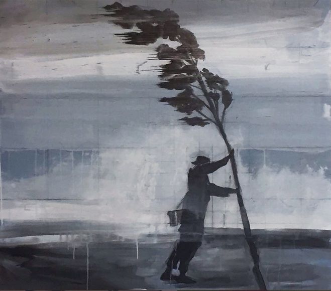

Florence by project 1415 was inspired by the tropical rainstorm 'Florence'
that hit the shores of North Carolina in the year of 2018.

The song is recorded by Tim Jung and Chiwan Kim, roommates and old friends who lives in the apartment number 1415.